Software UI · 软件界面
软件界面展示
从观察、测量到记录管理，一致的交互范式贯穿全流程。
观察 · 2D/3D 分屏与深度图
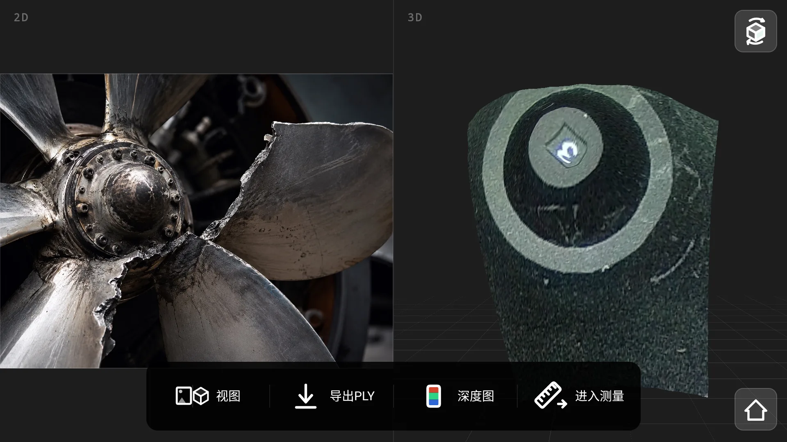
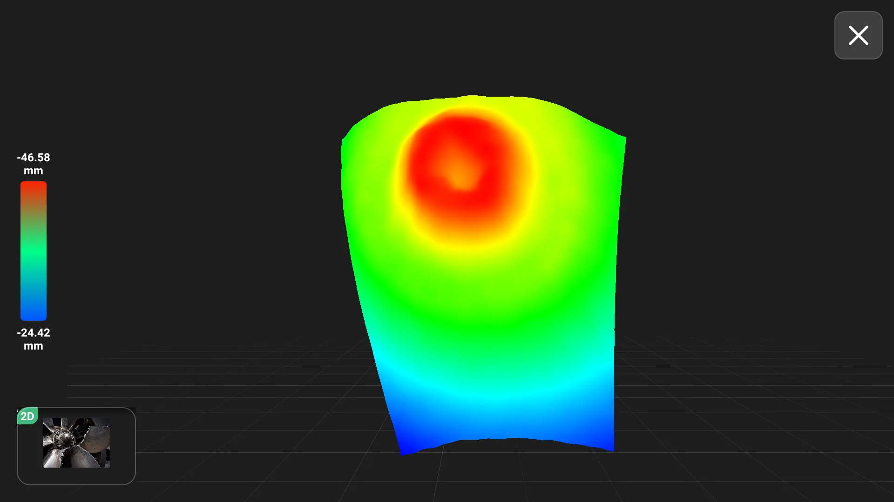
测量 · 五种测量工具
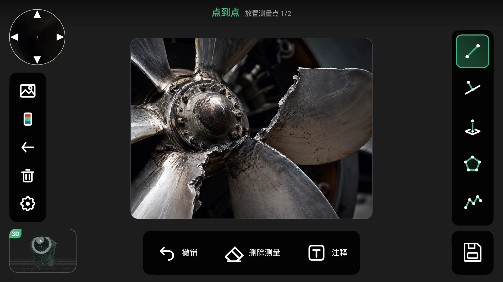
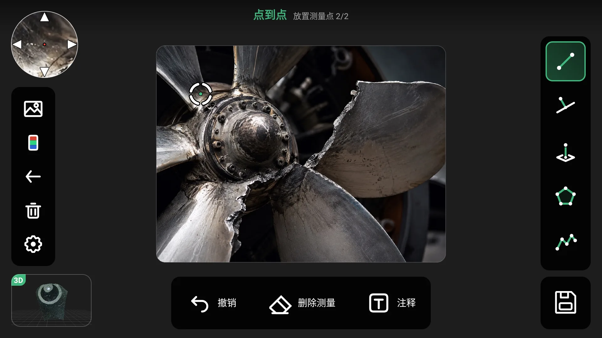

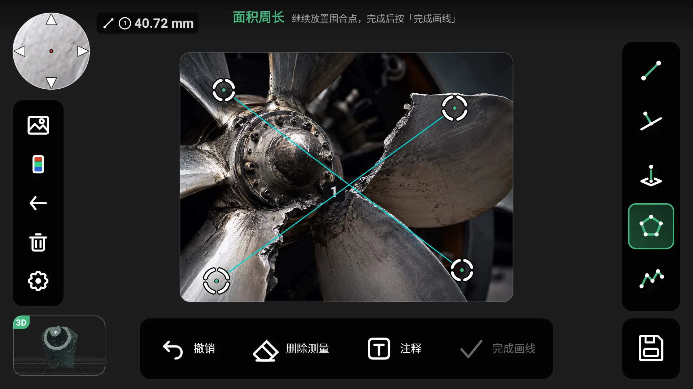

管理 · 图库与设置
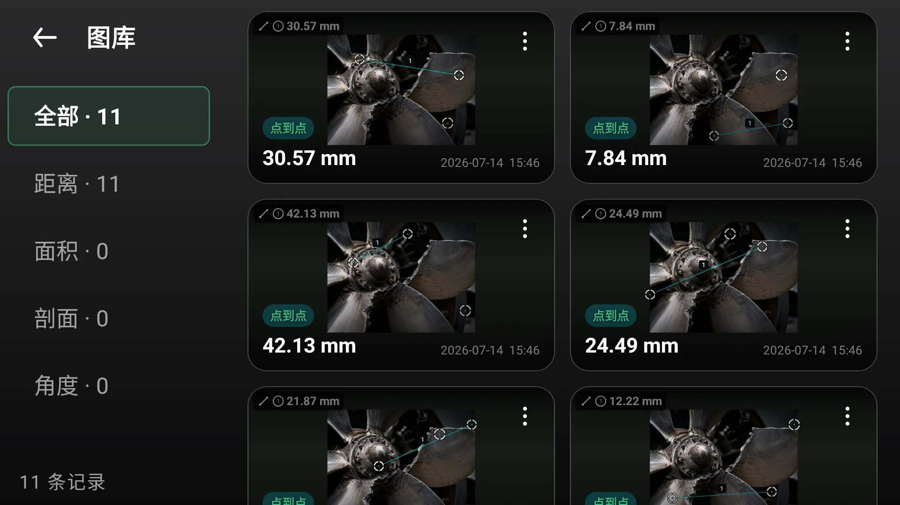
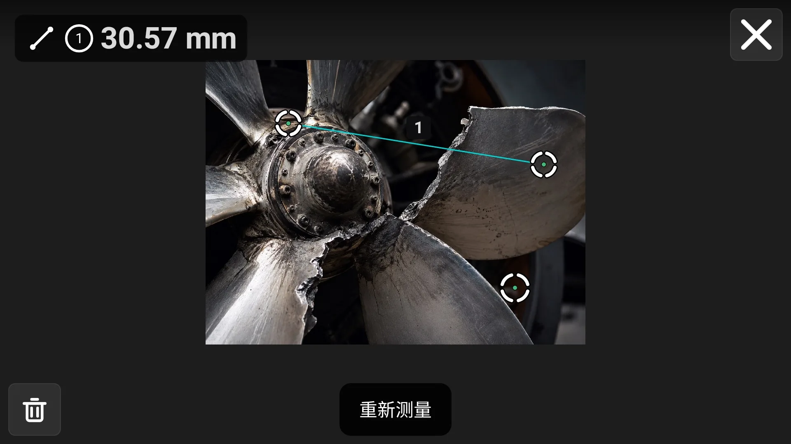
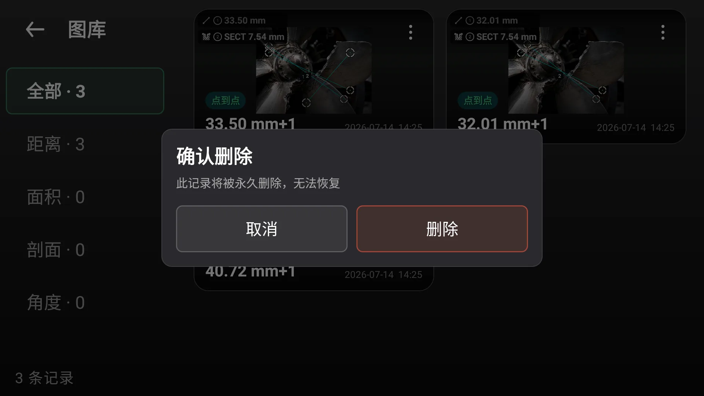
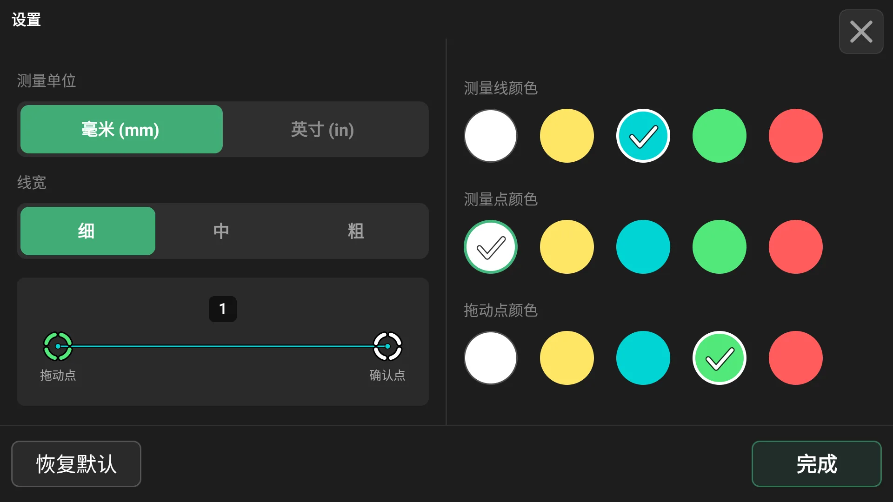
工业内窥镜检测系统的软硬件界面。为狭窄管道与设备腔体检测设计的实时图像采集、三维重建与精密测量工具——支持 2D/3D 视图切换、点到点 / 面积 / 剖面 / 角度多模式测量、深度伪彩图与 PLY 点云导出，兼顾现场强光环境下的可读性与操作效率。
从观察、测量到记录管理，一致的交互范式贯穿全流程。









检测常在强光、反光环境进行，采用深色界面 + 高对比强调色，保证读数、辅助线与控件在阳光下依然清晰可辨。
设备现场多为单手持握，界面动线与设备端硬件按键一一对齐，关键操作触手可及，减少现场误触。
点到点、面积、剖面、角度、深度等多种测量共用一致的"取点—确认—读数"范式，降低学习成本、提升现场效率。
同一目标在实景、三维重建、深度伪彩之间一键切换，帮助工程师快速定位并判断缺陷的位置与深度。
在航空航天领域，容错率为零。从机翼复合材料结构与机身蒙皮，到航空发动机涡轮叶片核心腔体与紧固件螺栓孔，每一个关键部件都必须承受极端的高速、高温与高压交变载荷。即便最微小的裂纹与腐蚀，一旦未被检测出，都会演变为灾难性的飞行安全隐患与数以百万计的昂贵停机损失。
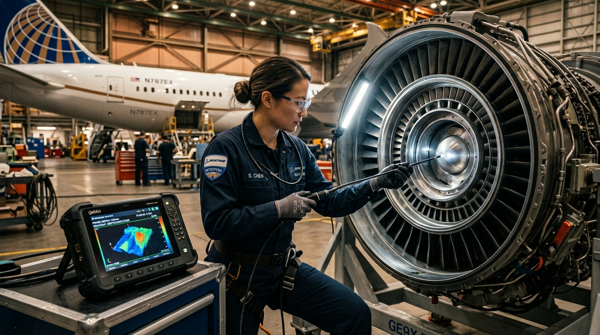
机库维保现场，工程师将超细光纤探头探入复杂航空发动机核心段。系统提供毫秒级双目立体匹配与三维深度重建，攻克金属反光与暗光交织的极端光学环境，实时捕捉叶片微裂纹、外物损伤（FOD）与烧蚀凹坑。
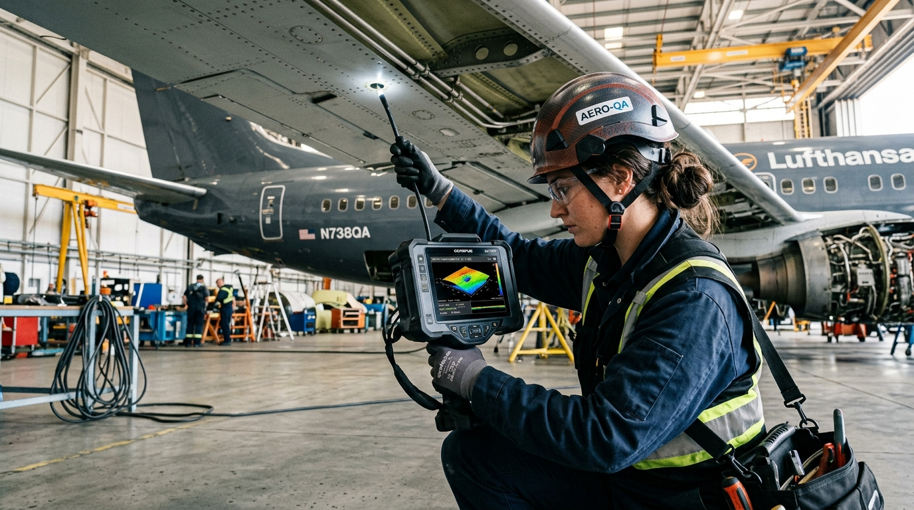
针对机翼大梁、复合材料蒙皮的分层损伤（Delamination）与螺栓紧固件孔（Fastener Holes）边缘应力裂纹，通过点到点精密测距与 MTD 剖面深度算法，为机务团队出具高精度的定量缺陷评估报告。
面对现代航空器日益复杂的复合材料与严苛质量监管，我们从人机工效、底层算法到数据架构给出的系统级解答。
缺陷在肉眼可辨前即对飞行造成潜在风险。VeinScope 提供 0.01mm 空间三维几何测量分辨率与亚像素放大镜取点，防微杜渐。
航空发动机弯道、齿轮箱死角探查困难。全电动四向弯曲探头配合 2D 实景与 3D 点云同屏，让工程师一眼洞察深部结构。
平面的二维画面无法感知凹陷还是凸起。深度伪彩热力图谱将三维数据转化为直观色温色阶，红近蓝远，凹凸毫秒级立判。
不同班组、不同航站操作习惯差异大。统一“观察—取点—确认—读数”一致性动线与标准化按键映射，杜绝误判漏判。
飞行安全依赖严密台账。测量标注与原始图像、PLY 点云模型本地加密存储，一键导出可追溯检测记录，100% 数据私有化主权。
停机坪烈日暴晒、戴耐油手套。高对比暗色系统与机身物理硬件按键点对点对齐，单手持握盲操，无繁琐层级阻滞。
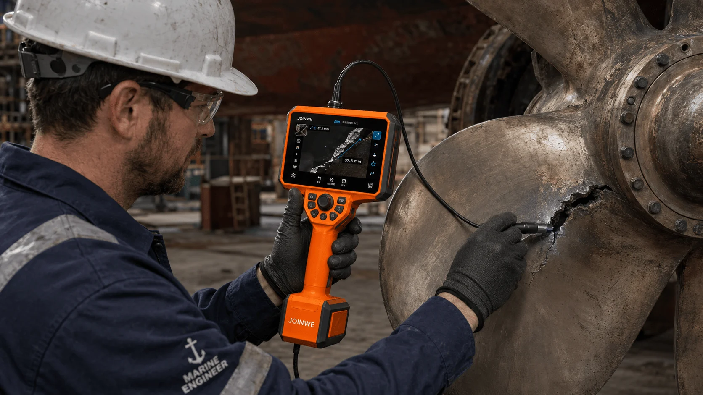
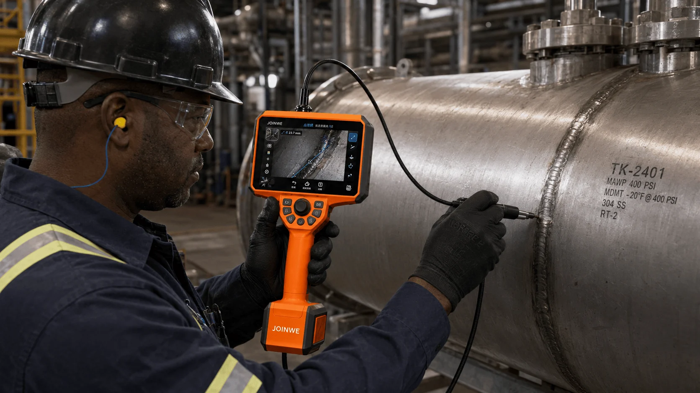
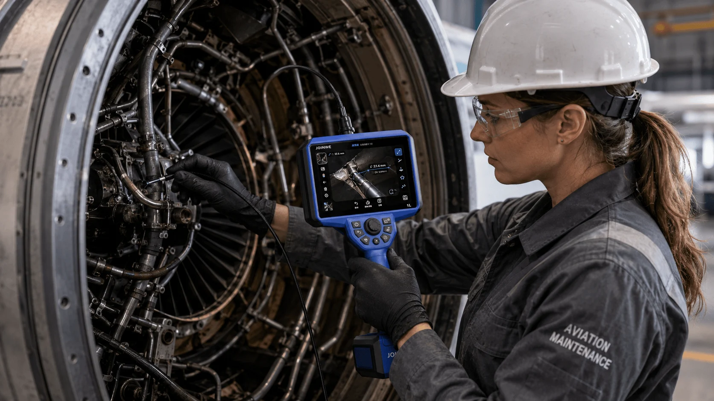
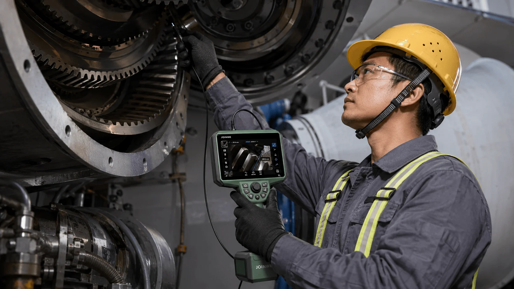